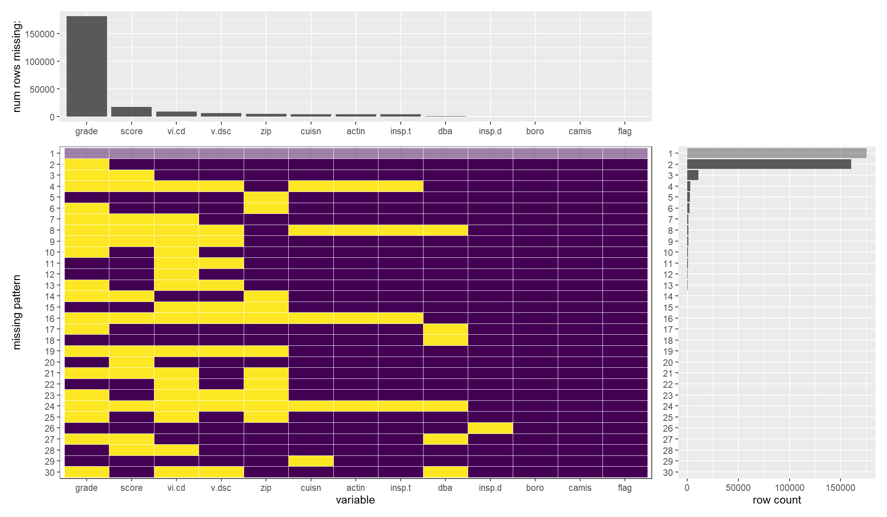
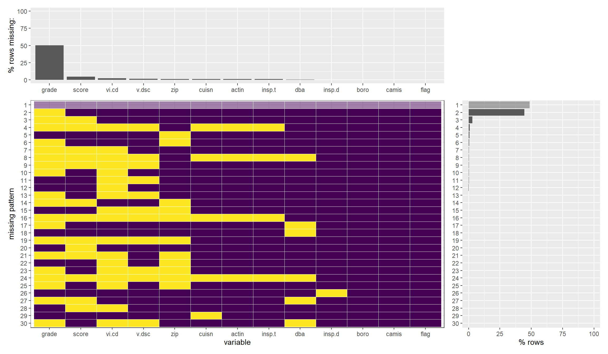
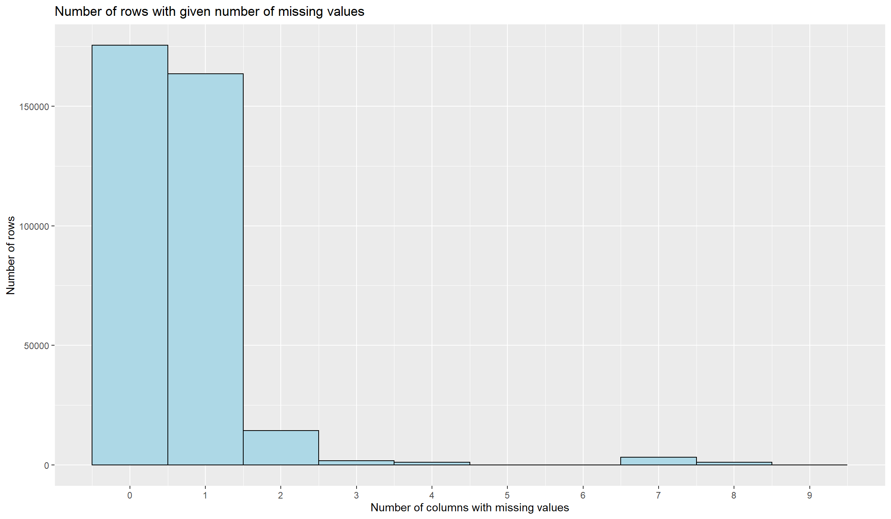
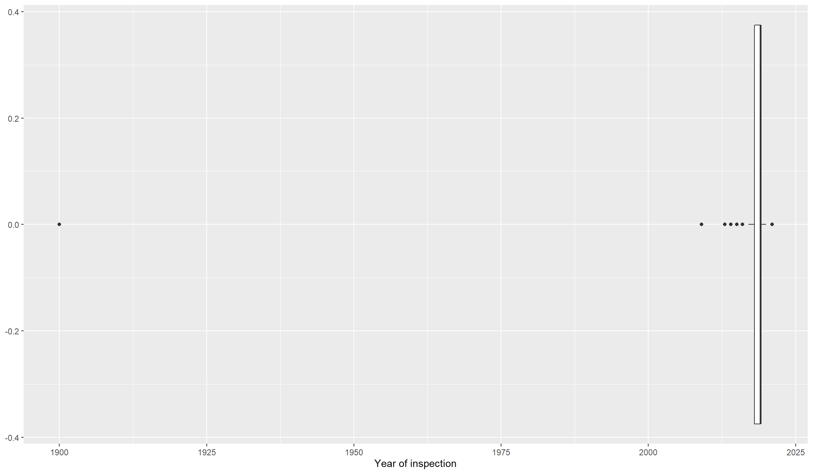
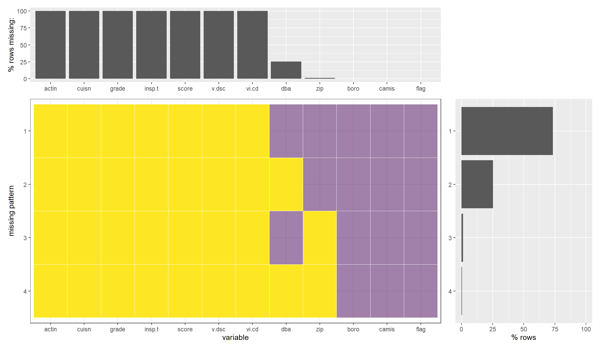
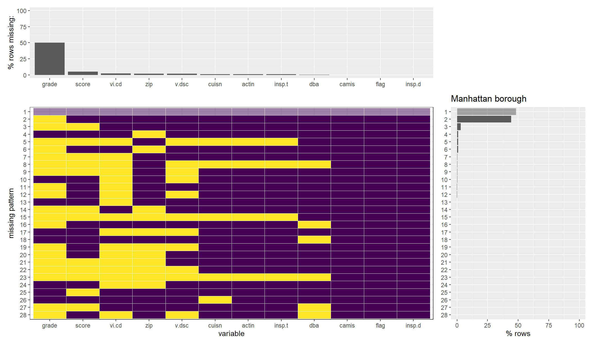
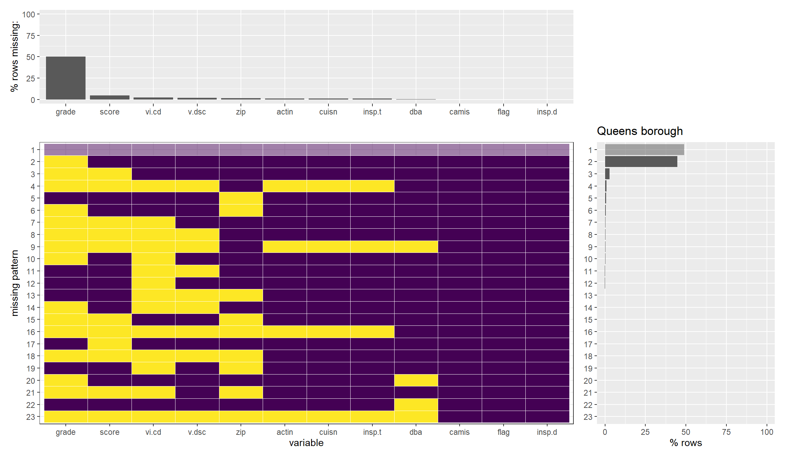
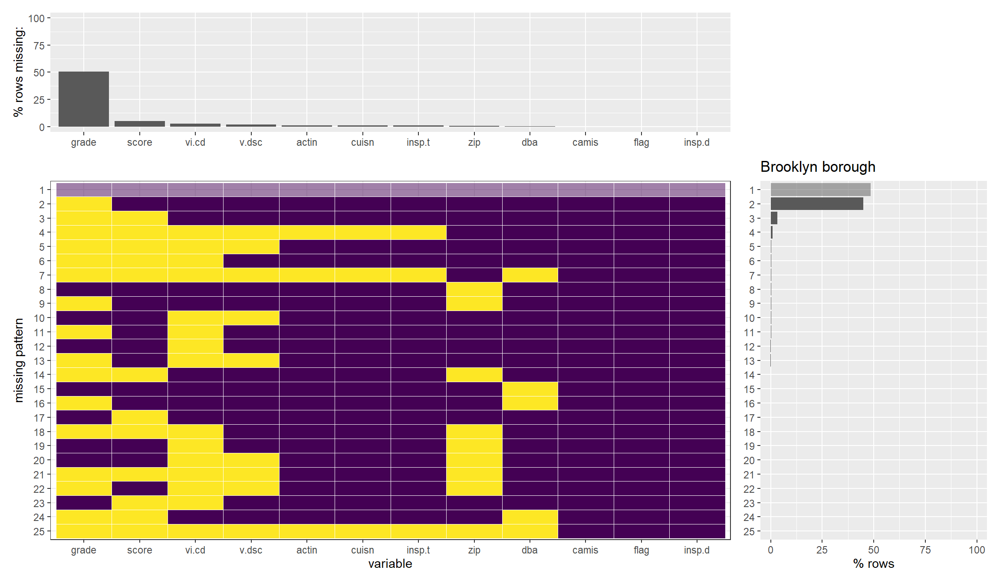
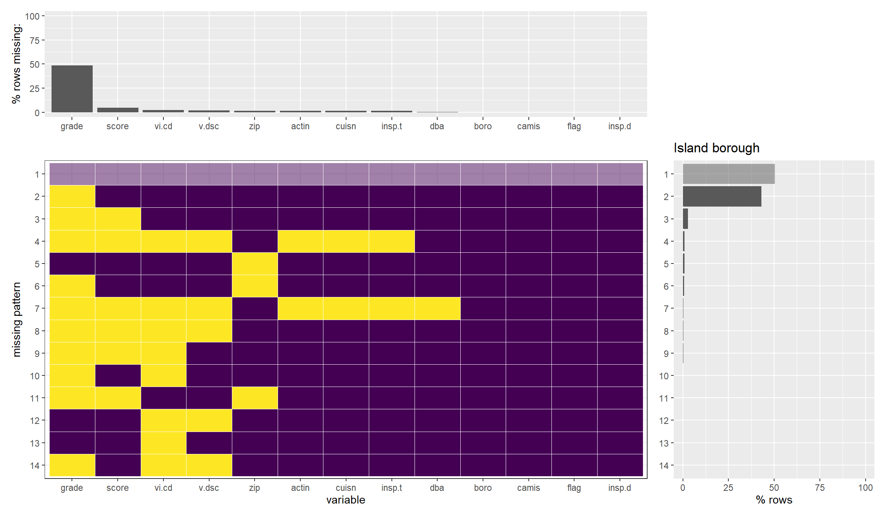
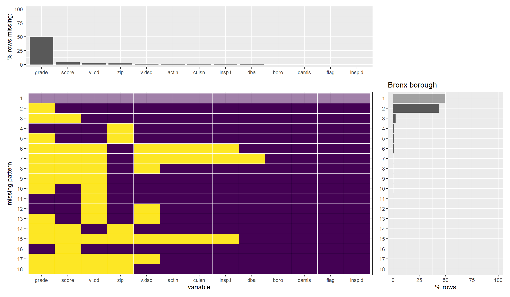

Chapter 4 Missing values
Let us analyze the missing patterns in our data frame

According to the output of plot_missing function, we can confirm that there are a total of 29 missing patterns in our dataset. But if we look at plots in detail, the most common pattern is the one that has no missing values, followed by the pattern with missing values only in the ‘grade’ column. These two cases account for almost all of the most frequent missing patterns. We can also infer from the upper side plot that ‘grade’ has about 50% of its missing values and all other columns have relatively much fewer proportions of missing values.
Since there are so many rows with missing values in ‘grade’, dropping these rows would not make sense. Instead, we will try to impute the ‘grade’ column values by finding exciting patterns in the dataset in further exploration.
Let us now try to see how many rows have a given number of missing values.

We can see that most of the rows in our dataset either have no missing values or have exactly one missing value. The reason for this is evident from the missing-patterns plot we showed above; since the column ‘grade’ has so many missing values. This will be fixed when we impute the values for ‘grade’. We will consider dropping rows with more than five missing values; this is reasonable as these rows are relatively less in quantity.
To better understand the pattern of missing values, we have to check for any placeholders for missing values. A nice strategy for this is to look for outliers.
Let us try to see when most of the inspections were conducted.

Here, we can see that the inspection date with year = 1900 is an outlier and possibly a placeholder for missing values. We confirm below by analyzing the missing patterns of the subset of our dataset with the inspection year 1900.

We can see that most of the data in rows with the inspection year equal to 1900 is missing. Therefore, we will consider dropping these rows.
Let us try to understand if there’s any relation between missing-patterns and borough.
unique(df$boro)## [1] Manhattan Queens Brooklyn Staten Island Bronx 0
## [7] 210
## Levels: 0 210 Bronx Brooklyn Manhattan Queens Staten Island




We can see that none of these seem to display any relation between missing-patterns and boroughs, which is worth investigating further.